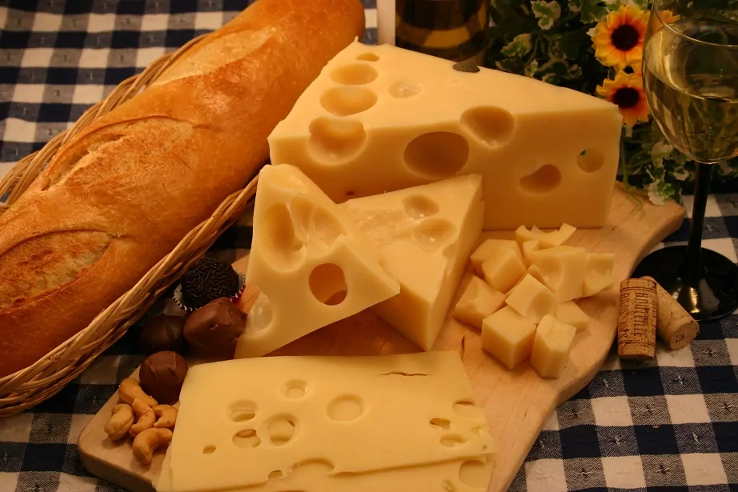

Overview to Swiss Cheese
Introduction to Swiss Cheese
Swiss cheese is a term commonly used to refer to various types of cheese produced in Switzerland, known for their unique flavors, textures, and the presence of holes or “eyes.” The most recognized variety is Emmental, often simply referred to as “Swiss cheese” in the United States. However, Switzerland boasts a rich diversity of cheeses, with over 450 varieties produced annually.
Historical Context
The history of cheesemaking in Switzerland dates back thousands of years, with evidence suggesting that dairy farming began around 2500 BC. Over centuries, the cheesemaking process evolved significantly. By the 15th century, the introduction of rennet allowed for the production of hard cheeses, which had a longer shelf life and became essential for trade and sustenance during harsh winters.
Types of Swiss Cheese
Some notable Swiss cheeses include:
- Emmental AOP: Originating from the Emme Valley in Bern, this cheese is characterized by its large holes and sweet flavor profile. It has been made since the 12th century and is protected under AOP (Appellation d’Origine Protégée) status.
- Gruyère AOP: Known for its rich flavor and firm texture, Gruyère has been produced since the early 12th century. It is widely used in cooking and fondue.
- Appenzeller: This cheese features a secret herbal brine wash during maturation that influences its flavor profile. It has been made for over 700 years but does not have AOP status due to its secret recipe.
- Raclette du Valais AOP: Famous for melting over potatoes and meats, Raclette originates from the Valais region and is integral to traditional Swiss cuisine.
- Tête de Moine AOP: This unique cheese is shaved into rosettes using a girolle tool to enhance its aroma and flavor.
- Sbrinz AOP: Considered one of Europe’s oldest cheeses, Sbrinz has a dense texture and is often grated over dishes.
- Vacherin Mont-d’Or AOP: Made from late-season milk, this soft cheese is typically sold in wooden boxes and enjoyed warm.
Production Process
Most Swiss cheeses are made from raw cow’s milk sourced from local farms within strict time frames after milking (ideally within 24 hours). The cheesemaking process involves heating milk, adding lactic acid bacteria and rennet, cutting curds, pressing them into molds, brining them for flavor enhancement, and aging them under controlled conditions. Aging can vary significantly depending on the type of cheese being produced.
Cultural Significance
Cheesemaking traditions are deeply rooted in Swiss culture. Events such as leading cows up to alpine pastures during summer are celebrated festivals that highlight the importance of dairy farming in rural communities. Additionally, Switzerland consumes an impressive amount of cheese—over 20 kg per person annually—reflecting its significance in daily diets.
In conclusion, Swiss cheese represents not only a variety of delicious products but also embodies centuries-old traditions that continue to thrive today through artisanal practices across Switzerland.